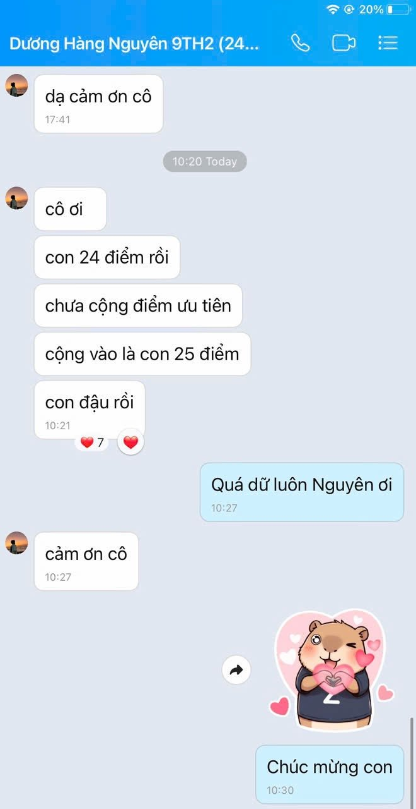
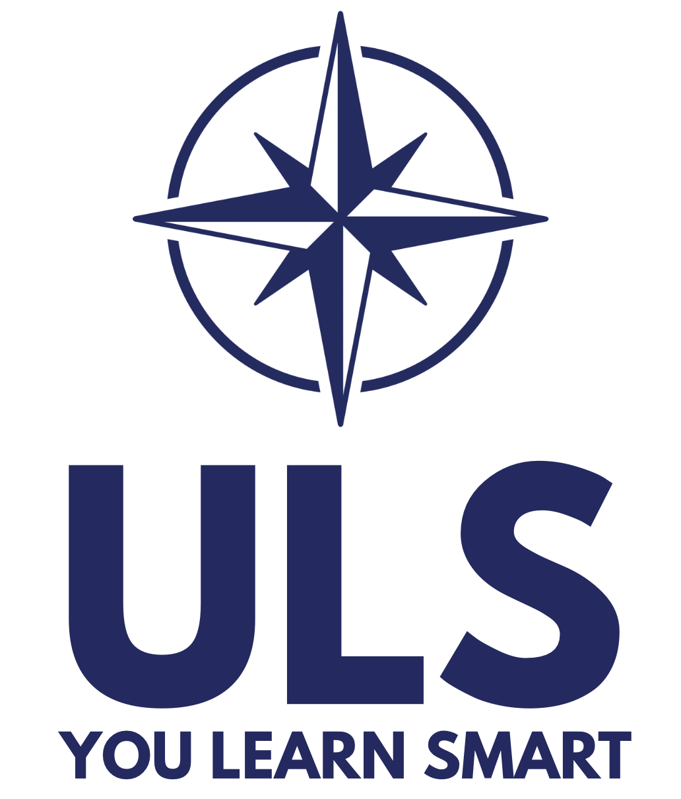
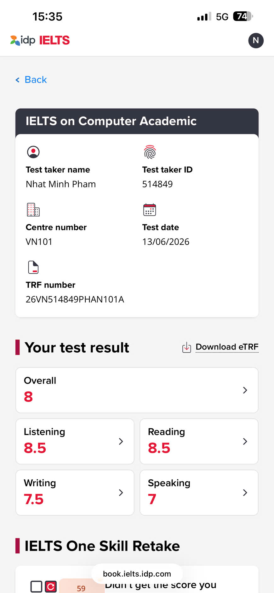
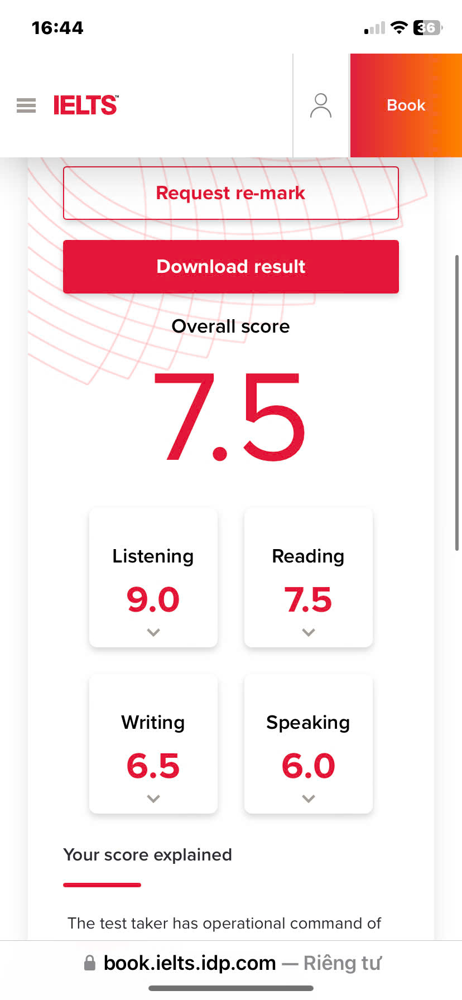
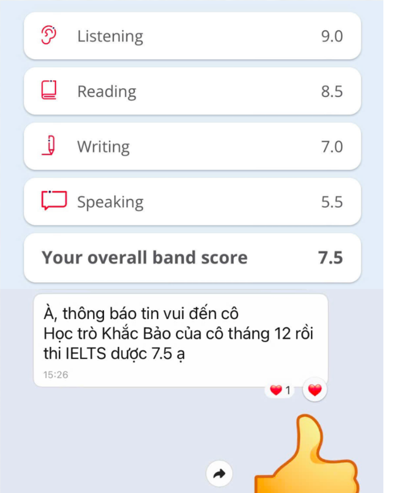
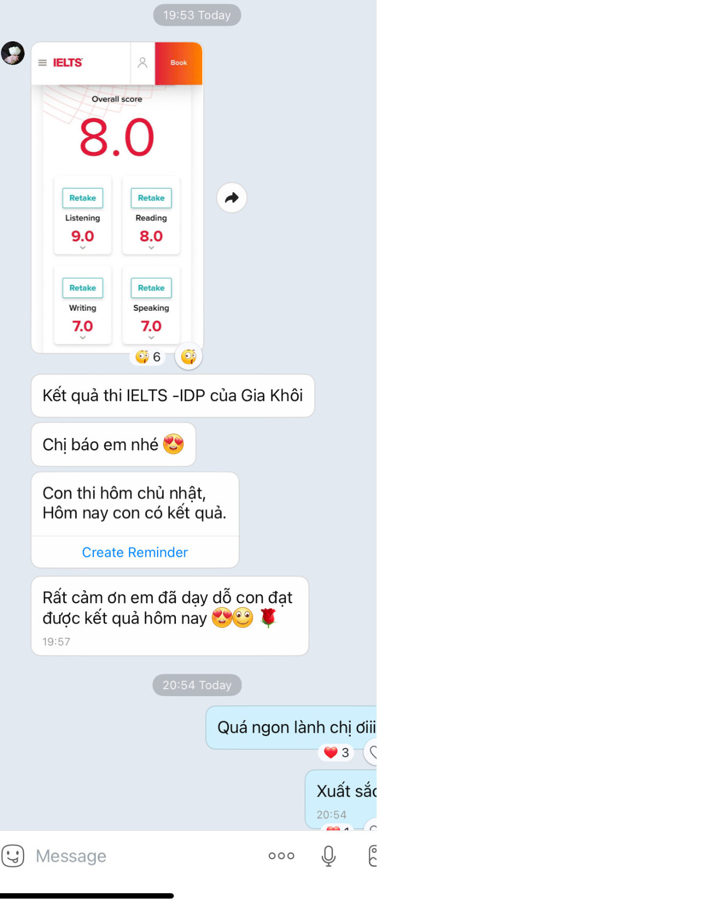

Tiếng Anh THCS
Bám sát chương trình chính khóa, củng cố ngữ pháp – từ vựng – đọc hiểu – viết câu, giúp học sinh học chắc và tự tin hơn.
- Lớp 6, 7, 8, 9
- Ôn kiểm tra định kỳ
- Củng cố nền tảng và kỹ năng làm bài
ULS English • You Learn Smart
Chương trình tiếng Anh học thuật dành cho học sinh THCS, luyện thi Chuyên Anh, Học sinh giỏi cấp Thành phố và IELTS.

Course Overview
Lộ trình học rõ ràng theo từng mục tiêu: chính khóa, nâng cao, thi chuyên và IELTS.
Bám sát chương trình chính khóa, củng cố ngữ pháp – từ vựng – đọc hiểu – viết câu, giúp học sinh học chắc và tự tin hơn.
Dành cho học sinh có nền tảng tốt, định hướng thi Học sinh giỏi, Chuyên Anh, PTNK và các bài thi nâng cao.
Lộ trình theo band mục tiêu, kết hợp nền tảng ngôn ngữ, chiến thuật làm bài và phản hồi chi tiết.
Schedule
| Nhóm khóa | Lớp / Khóa | Thời gian | Ghi chú |
|---|---|---|---|
| THCS | Tiếng Anh 6 | Thứ Hai • 16h30–19h30 | Cơ bản |
| THCS | Tiếng Anh 7 | Thứ Tư • 16h30–19h30 | Cơ bản |
| THCS | Tiếng Anh 8 cơ bản | Thứ Ba • 16h30–19h30 | Bám sát chính khóa |
| Nâng cao | Tiếng Anh 8 nâng cao | Thứ Bảy • 16h30–19h30 | HSG / Chuyên |
| THCS | Tiếng Anh 9 cơ bản 1 | Thứ Năm • 16h30–19h30 | Ôn tuyển sinh 10 |
| THCS | Tiếng Anh 9 cơ bản 2 | Chủ nhật • 13h00–16h00 | Ôn tuyển sinh 10 |
| THCS | 9CB3 (nhóm nhỏ <15 HS) | Thứ Sáu • 16h30–19h30 | Dành cho học sinh cần được kèm sát và củng cố nền tảng |
| Nâng cao | Tiếng Anh 9 nâng cao | Thứ Bảy • 13h00–16h00 Chủ nhật • 16h30–19h30 | HSG / Chuyên Anh |
| IELTS | IELTS Launchpad 5.5+ | Thứ Ba & Thứ Năm • 13h00–16h00 | Xây nền IELTS |
| IELTS | IELTS Mastery 6.5+ | Thứ Bảy & Chủ nhật • 08h00–11h00 | Bứt phá band 6.5+ |
* Một số lớp có thể điều chỉnh giờ học để phù hợp thời khóa biểu chính khóa trong năm học.
IELTS Pathway
Dành cho học viên cần xây nền IELTS Academic: từ vựng học thuật, ngữ pháp ứng dụng, đọc hiểu, nghe theo dạng bài và viết/nói theo cấu trúc.
Dành cho học viên đã có nền tảng, cần nâng band qua chiến thuật xử lý đề, chữa bài chi tiết và luyện nói học thuật.
Khóa học sử dụng học liệu chọn lọc theo trình độ, kết hợp sách luyện thi IELTS và tài liệu nội bộ của ULS.
Student Achievements
Minh chứng học tập từ các kỳ thi Học sinh giỏi, tuyển sinh lớp 10 và IELTS.
100% học sinh đạt giải cấp Thành phố; nhiều học sinh trúng tuyển Chuyên Anh tại các trường chuyên hàng đầu TP.HCM và đạt điểm cao môn Tiếng Anh trong kỳ thi tuyển sinh lớp 10.





Học viên đạt IELTS 8.0 và nhiều kết quả IELTS 7.5+.







Teacher Profile
Tổ trưởng Tổ Ngoại ngữ – Trường Trung học Thực hành Sài Gòn. IELTS 8.0 (Speaking 8.5).
Registration
ULS English – 71A Hùng Vương, Phường Chợ Quán, TP.HCM
Miss Uyên: 0765 218 531 (Zalo)
Mở form đăng ký